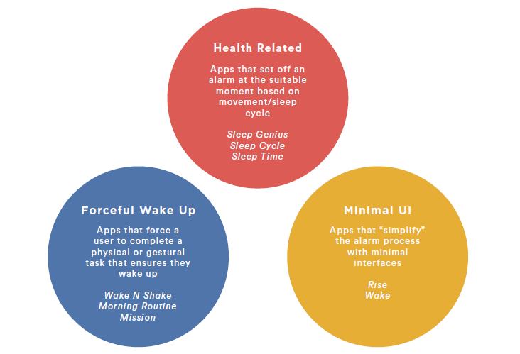
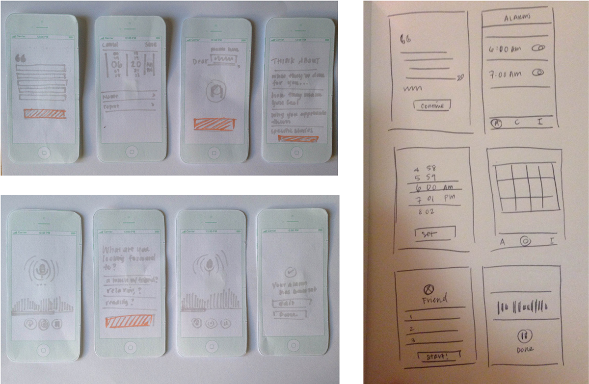

As my final project for my Design Foundations class, I re-designed the alarm clock app to address need unmet by the dozens of alarm clock apps available in the marketplace.
In order to understand the design challenges in re-designing a widely used application, I interviewed several students on the Berkeley campus about their experiences with alarm clocks. In addition, I conducted market research on the existing apps in the design space.
Through conducting interviews, I learned that people almost always wake up stressed because of the work they have to do that day, and the only time people were excited to wake up is if they had something to look forward to. I also learned that setting an alarm is the last thing a person does before they go to bed unless they read in bed.
Jana, a UC Berkeley student, is one of the students I interviewed
From exploring the design space, I realized that most alarm clocks focus on supporting healthy sleep cycles, forcing a person to wake up, or creating a minimal and simple alarm. While many alarms address these areas, people still seem sluggish and unmotivated to wake up--this became the focus of my final project.
After further research, I learned that teamwork, purpose, and gratitude generally make people feel motivated and joyful. Using these concepts as a foundation for my app, I decided to design an alarm that forces people to record a gratitude message in order to set an alarm. They would also be able to record something they're looking forward to for the next day, which would then play as an alarm--a reminder of the good in the day.
After I began translating my prototypes into higher fidelity, I realized that my original sketches (on the left) were inadequate for the intended functionality of the app, so I re-thought some of the pages of the app. The new sketches included a calendar, which I use as a way of archiving recordings.
